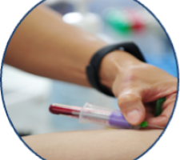
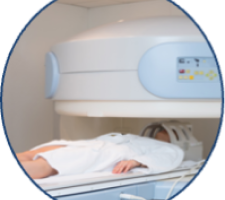
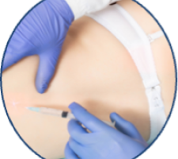

Розсіяний склероз - це хронічне аутоімунне захворювання центральної нервової системи,
що
охоплює кілька відділів головного та/або спинного мозку.
Патологічна активність імунітету призводить до руйнування мієлінових оболонок нервових волокон,
здорова нервова тканина заміщується сполучною – виникають численні осередки склерозу.
Процес передачі нервових імпульсів порушується, утворюється різноманітна неврологічна симптоматика.
У світі загальна кількість осіб із розсіяним склерозом перевищує 2,8 млн
За інформацією ВООЗ:
Середній вік початку захворювання - 29-33 роки.
50% мають труднощі під час виконання професійних обовʼязків
30-37% хворих здатні пересуватися лише. З допомогою близьких.
Через 15 років від початку захворювання: лише 50% хворих зберігають здатність. працювати.
1. Класичні симптоми при розсіяному склерозі
Швидка втомлюваність та загальна слабкість організму.
Запаморочення, порушення координації, згодом переростає в неможливість виконання спрямованих
рухів.
У рідкісних випадках: імпотенція, порушення функції сечовипускання, епілепсія.
Поступове порушення функції мови: від легкої ускладнення, до повної дисфункції.
Зниження інтелектуальних здібностей, розвиток деменції (деградації когнітивних функцій головного
мозку).
Зниження чутливості тіла, аж до повного зникнення, крім голови.
Нетримання калу і сечі (на останніх етапах розвитку захворювання).
2. Перебіг захворювання
Ремітуюча
Виявляється чергуванням періодів загострення та ремісії. Останні можуть
тривати від кількох місяців до кількох років та супроводжуватися частковим або повним зникненням
симптомів.
Вторинно-прогресуюча
Також проявляється чергуванням періодів загострення та ремісії, але вони
коротші, і стан пацієнта вже не відновлюється. Відбувається поступове ураження нервової системи та
наростання симптоматики.
Первинно-прогресуюча
Характеризується безперервним розвитком хвороби та погіршенням
самопочуття пацієнта. Періоди ремісії відбуваються дуже рідко.
3. Фaктори розвитку розсіяного склерозу
Генетичний зв’язок
Розсіяний склероз не має прямого генетичного зв'язку, але ризик прояву істотно зростає при
«сприятливому» поєднанні генів.
Куріння
Куріння, алкоголізм, наркоманія, неякісне/неправильне харчування, підвищені розумові
навантаження, сильні або регулярні стресові навантаження і т.д.
Екологічна ситуація
Несприятлива екологічна ситуація, підвищений радіаційний фон, перенесені травми і т.д.
Екологічна ситуація
Несприятлива екологічна ситуація, підвищений радіаційний фон, перенесені травми і т.д.
4. Методи дігностики
Збір клінічних даних з метою виявлення ключових особливостей патології: хвилеподібний перебіг
хвороби та множинні осередки ураження ЦНС.

Аналіз крові та ліквору для виключення інфекційних процесів та патологій аутоімунного характеру.

МРТ головного та спинного мозку. Використовується визначення осередків пошкодження нервових
волокон

Пункція спинного мозку: взята спинномозкова рідина (ліквор) тестується на білок, глюкозу.
Відхилення цих показників говорить про захворювання спинного та головного мозку
Аналіз крові та ліквору для виключення інфекційних процесів та патологій аутоімунного характеру.
5. Якщо провести реабілітацію вчасно
Якщо провести реабілітацію вчасно, відновлення пацієнта буде проходити
повноцінно і швидко. Перевагою фізичної терапії є безпечне фізичне навантаження на пацієнта
Звертайтеся в кабінет фізичної реабілітації та масажу «Корифей» і
високопрофесійні фахівці підберуть індивідуальну програму фізичної реабілітації розсіяного склерозу.
Її виконання забезпечить дбайливе і швидке відновення втрачених функцій організму.